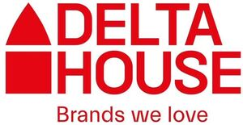

Trade Mark Journal No.2025/028 11 July 2025
WO0000001861040 (7,11,16,21,29,30,31,32,33,35,36,41,42)
Office of origin: European Union Intellectual Property Office (EUIPO)
Date of International Registration:26 March 2025
Date of designation in the UK:
26 March 2025

The mark contains the colour red.
- Class 7
- Automatic vending machines.
- Class 11
- Electric coffeepots; expresso coffee machines; coffee roasters; electric espresso machines; electric coffeepots; coffee roasters; electric coffee makers for household use; domestic coffee percolators [electric]; tea making machines; electric chocolate makers; electric coffeepots; electrical coffee pots incorporating percolators; electric coffee brewers; electric coffee brewers; electric wireless coffeepots; coffee roasters; electric coffee roasters; coffee roasters; kettles; electric kettles; coffee roasters; coffee roasters; electric coffee filters; apparatus for making foam while heating milk; parts and fittings for all the aforesaid goods.
- Class 16
- Promotional publications; paper; magazines [periodicals]; flyers; printed brochures; pamphlets; printed publications; periodicals; printed matter; printed promotional material; notepads; pens; pencils; stationery; printed matter for instructional purposes; stationery.
- Class 21
- Tea infusers not of precious metal; decorative glass [not for building]; kitchen utensils; beverage glassware; glass decanters; glass decanters; wine glasses; glasses, drinking vessels and barware; coasters (tableware); drinks containers; kitchen containers; corkscrews, electric and non-electric; coffee makers, non-electric; mugs; mug racks; coffee mugs; insulating jars; kitchen containers; sugar bowls; cabarets [trays]; tea infusers; vases; tea services [tableware]; tea services not of precious metal; works of art, of porcelain, terra-cotta or glass.
- Class 29
- Meat; fish; game; meat extracts; edible nuts; jams; compotes; eggs; edible oils and fats; soups; instant soup; broth [soup]; vegetable soup preparations; mixes for making soup; canned soups; hamburgers; potato chips; olive oil; fruit preserves; preserves, pickles; mushrooms, preserved; mushrooms, prepared; dried edible mushrooms; mushroom purée; jellies, jams, compotes, fruit and vegetable spreads; olives, preserved; pickles; vegetable preserves; potato snacks; kale chips; fruit-based snack food; milk-based snacks; coconut-based snacks; potato-based snack foods; snack mixes consisting of dehydrated fruit and processed nuts; snack foods based on vegetables; nut-based snack foods; vegetable-based snack foods; dried fruit-based snacks; olives, [prepared]; stuffed olives; olives, [prepared].
- Class 30
- Coffee; coffee extracts; beverages based on coffee substitutes; prepared coffee beverages; tea-based beverages; cocoa-based beverages; drinking chocolate; chocolates; corn starch derivatives in powder form for making into drinks; sweeteners (natural -); sweets (candy), candy bars and chewing gum; candy; tea-based beverages; espresso; coffee capsules, filled; flavoured coffee; decaffeinated coffee; instant coffee; ground coffee; artificial coffee; extracts of coffee for use as flavours in beverages; coffee-based beverages; mixtures of coffee; chocolate coffee; mixtures of malt coffee with coffee; coffee-based beverages; coffee extracts for use as substitutes for coffee; coffee extracts for use as substitutes for coffee; sugar; granulated sugar; icing sugar; cube sugar; cereals; barley prepared for human consumption; barley (crushed -); snack food products made from potato flour; roasted barley and malt for use as substitute for coffee; chicory [coffee substitute]; coffee essences; coffee flavorings [flavourings]; tea substitutes; tea; chai tea; tea; rooibos tea; green tea; black tea [English tea]; instant tea; oolong tea; oolong tea; black tea; ginger tea; citron tea; ginseng tea; tea leaves; mate [tea]; tea substitutes; rosemary tea; chamomile tea; Japanese green tea; darjeeling tea; tea essences; tea mixtures; jasmine tea; tea bags; sage tea; tea for infusions; lime tea; earl grey tea; infusions, not medicinal; fruit teas; cocoa; cocoa-based beverages; cocoa-based beverages; cocoa powder; cocoa products; cocoa products; cocoa beverages with milk; cocoa mixes; cocoa-based beverages; instant cocoa powder; prepared cocoa and cocoa-based beverages; cocoa-based beverages; preparations based on cocoa; foods with a cocoa base; drinking cocoa paste; cocoa for use in making beverages; powdered preparations containing cocoa for use in making beverages; preparations for making beverages [cocoa based]; cocoa-based beverages; cocoa preparations for use in making beverages; coffee, teas and cocoa and substitutes therefor; extracts of cocoa for use as flavours in beverages; cocoa [roasted, powdered, granulated, or in drinks]; extracts of cocoa for use as flavours in foodstuffs; mixtures of malt coffee with cocoa; cocoa extracts for human consumption; ice beverages with a cocoa base; drinks in powder form containing cocoa; cocoa-based beverages; cocoa beverages with milk; freeze-dried coffee; iced coffee; coffee in brewed form; malt coffee; coffee in whole-bean form; coffee concentrates; coffee oils; coffee essences; roasted coffee beans; prepared coffee and coffee-based beverages; ground coffee beans; ground coffee; mixtures of malt coffee extracts with coffee; mixtures of coffee essences and coffee extracts; substitutes for tea; coffee-based beverages; coffee-based beverages; coffee beverages with milk; mixtures of coffee and malt; malt coffee extracts; mixtures of coffee and chicory; coffee substitutes [artificial coffee or vegetable preparations for use as coffee]; vegetal preparations for use as coffee substitutes; vegetal preparations for use as coffee substitutes; ice beverages with a coffee base; aerated beverages [with coffee, cocoa or chocolate base]; sugar-coated coffee beans; vegetable based coffee substitutes; chicory based coffee substitute; aerated beverages [with coffee, cocoa or chocolate base]; chicory for use as substitutes for coffee; preparations for making beverages [coffee based]; coffee-based beverage containing milk; coffee-based beverages containing ice cream (affogato); chocolate bark containing ground coffee beans; extracts of coffee for use as flavours in foodstuffs; preparations of chicory for use as a substitute for coffee; coffee [roasted, powdered, granulated, or in drinks]; filters in the form of paper bags filled with coffee; chicory mixtures, all for use as substitutes for coffee; chicory mixtures, all for use as substitutes for coffee; chicory extracts for use as substitutes for coffee; coffee substitutes [grain or chicory based]; chocolate drink preparations flavoured with mocha; chicory and chicory mixtures, all for use as substitutes for coffee; tablets (non-medicated -) made of glucose with a caffeine base; sandwiches; cakes; croissants; sweetmeats [candy]; tarts; bread; fresh bread; pot pies; flour based savory snacks; dumplings; sausage rolls; fresh sausage rolls; frankfurter sandwiches; hot sausage and ketchup in cut open bread rolls; fresh pasties; pizza; hamburgers contained in bread rolls; chocolate; cookies; cereal bars; gum sweets; lozenges [confectionery]; condiments; rice-based snack food; extruded wheat snacks; cereal-based snack food; rice-based snack food; rice-based snack food; fruit cake snacks; crispbread snacks; puffed cheese balls [corn snacks]; flour; flour; confectionery; rice; tapioca; sago; preparations made from cereals; pastry dough; preparations for making bakery products; preparations for making bakery products; ices; honey; golden syrup; yeast; baking powder; salt; mustard; vinegar; sauces [condiments]; spices; ice; flavourings, other than essential oils, for beverages.
- Class 31
- Agricultural products (unprocessed -); raw and unprocessed grains; raw and unprocessed seeds; fresh fruits and vegetables; garden herbs, fresh; natural plants and flowers; plant bulbs, seedlings and seeds; live animals; foodstuffs for animals; beverages for pets; malt; unprocessed horticultural products; trees and forestry products; seeds; plants; garden herbs, fresh; flowers; fresh vegetables; glasswort; unprocessed mushrooms; mushrooms, fresh; unprocessed mushrooms; mushrooms, fresh, for food; fresh edible black fungi; mycelium for agricultural purposes; unprocessed olives.
- Class 32
- Non-alcoholic beverages; juices; non-alcoholic beverages; energy drinks; juices; juices; waters; smoothies; mineral and aerated waters; fruit drinks; syrups and other non-alcoholic preparations for making beverages; aerated water; vegetable drinks; vegetable juices [beverages]; non-alcoholic beverages containing vegetable juices; waters [beverages]; non-alcoholic beverages; isotonic drinks; sports drinks; sherbets [beverages]; non-alcoholic beverages; non-alcoholic beverages; guarana drinks; cola drinks; syrups for beverages; mineral water [beverages]; nutritionally fortified beverages; energy drinks containing caffeine; flavoured carbonated beverages; iced fruit beverages; extracts for making beverages; ramune (Japanese soda pops); carbonated non-alcoholic drinks; pastilles for effervescing beverages; pastilles for effervescing beverages; beverages containing vitamins; kvass [non-alcoholic beverage]; protein-enriched sports beverages; vitamin enriched sparkling water [beverages]; syrups for making beverages; non-alcoholic preparations for making beverages; fruit-based beverages; non-alcoholic fruit juice beverages; non-alcoholic fruit juice beverages; malt syrup for beverages; tonic water [non-medicated beverages]; fruit-flavoured beverages; tomato juice [beverage]; whey beverages; powders for effervescing beverages; red ginseng juice beverages; apple juice beverages; sports drinks containing electrolytes; sorbets in the nature of beverages; beer-based beverages; non-alcoholic malt drinks; fruit juice beverages; mineral enriched water [beverages]; drinking water with vitamins; coconut-based beverages; aloe vera drinks, non-alcoholic; syrups for making non-alcoholic beverages; isotonic beverages [not for medical purposes]; essences for making beverages; non-alcoholic flavored carbonated beverages; mixes for making sorbet beverages; vitamin fortified non-alcoholic beverages; functional water-based beverages; protein-enriched sports beverages; mung bean beverages; smoothies; frozen fruit-based beverages; smoked plum beverages; non-alcoholic honey-based beverages; whey beverages; pineapple juice beverages; beverages consisting principally of fruit juices; energy drinks [not for medical purposes]; grape juice beverages; non-alcoholic fruit juice beverages; preparations for making beverages; dilutable preparations for making beverages; powders for the preparation of beverages; non-alcoholic grape juice beverages; non-alcoholic beverages flavoured with tea; aloe juice beverages; non-alcoholic beer flavored beverages; fruit juice for use as beverages; non-alcoholic sparkling fruit juice drinks; non-alcoholic beverages flavoured with coffee; orange juice drinks; ginger juice beverages; concentrates for making fruit drinks; fruit squashes; non-alcoholic beverages containing fruit juices; squashes [non-alcoholic beverages]; syrups for making fruit-flavored drinks; non-alcoholic soda beverages flavoured with tea; green vegetable juice beverages; non-alcoholic malt free beverages [other than for medical use]; lime juice for use in the preparation of beverages; water-based beverages containing tea extracts; lemon juice for use in the preparation of beverages; non-alcoholic vegetable juice drinks; nut and soy based beverages; oat-based beverages [not being milk substitutes]; rice-based beverages, other than milk substitutes; rice-based beverages, other than milk substitutes; syrups for making whey-based beverages; non-alcoholic fruit extracts used in the preparation of beverages; soya-based beverages, other than milk substitutes; powders used in the preparation of fruit-based beverages; beverages consisting of a blend of fruit and vegetable juices; powders used in the preparation of coconut water drinks; brown rice beverages other than milk substitutes; non-carbonated soft drinks; syrups for making soft drinks; fruit flavored soft drinks; non-alcoholic beverages flavoured with coffee; low-calorie soft drinks; fruit-based soft drinks flavored with tea; concentrates for use in the preparation of soft drinks; powders used in the preparation of soft drinks; cordials; aerated juices; soda water; aperitifs, non-alcoholic; aerated water; cocktails, non-alcoholic; fruit nectars, non-alcoholic; ginger ale; lemonades; non-alcoholic dried fruit beverages; non-alcoholic fruit extracts; seltzer water; table waters; waters [beverages].
- Class 33
- Alcoholic beverages (except beer); digesters (liquors and spirits); wine.
- Class 35
- Retail services via catalogues related to non-alcoholic drinks; retail services in relation to coffee; arranging business introductions relating to the buying and selling of products; business administration in the field of transport and delivery; promoting the goods and services of others through the distribution of discount cards; business consulting services for start-up companies; providing business management start-up support for other businesses; retail services connected with stationery; retail services relating to food; business management of retail outlets; management of a retail enterprise for others; administration of the business affairs of retail stores; business management of wholesale and retail outlets; presentation of goods on communication media, for retail purposes; publicity and sales promotion services; providing assistance in the field of product commercialization; advertising services relating to the commercialization of new products; assistance in product commercialization, within the framework of a franchise contract; display services for merchandise; business management of wholesale outlets; marketing services; promotional marketing; product marketing; business advice relating to franchising; business assistance relating to franchising; advice in the running of establishments as franchises; wholesale services in relation to coffee; public relations services; advertising and marketing services provided by means of social media; arranging and conducting of promotional events; publicity and sales promotion services; merchandising; retail services in relation to clothing; online retail services relating to clothing; retail services in relation to clothing accessories; retail services in relation to cups and glasses; wholesale services in relation to cookware; retail services in relation to cookware; retail services in relation to chocolate; wholesale services in relation to chocolate; wholesale services in relation to confectionery; retail services in relation to confectionery; business consultancy and advisory services; consultancy services relating to the procurement of goods and services; consultancy services regarding business strategies; promotional marketing services using audiovisual media; business promotion services provided by audio/visual means; producing promotional videotapes, video discs, and audio visual recordings; publicity and sales promotion services; advertising, marketing and promotional services; advertising and promotion services and related consulting; advertising, promotional and public relations services; customer loyalty services for commercial, promotional and/or advertising purposes; customer club services, for commercial, promotional and/or advertising purposes; promoting the sale of goods and services of others through promotional events; promoting the goods and services of others by means of a loyalty rewards card scheme; loyalty scheme services; administration of loyalty rewards programs; administration of consumer loyalty programs; administration of customer loyalty and incentive schemes; loyalty, incentive and bonus program services; organisation and management of customer loyalty programs; organisational consultancy regarding customer loyalty programmes; administration of loyalty programs involving discounts or incentives; administration of loyalty rewards programs featuring trading stamps; sales promotion through customer loyalty programs; organisation of customer loyalty programs for commercial, promotional or advertising purposes; organisation and management of business incentive and loyalty schemes; promoting the goods and services of others over the internet; promoting the goods and services of others via a global computer network; promoting the goods and services of others via computer and communication networks; classified advertising; classified advertising; providing online commercial directory information services; providing an on-line commercial information directory on the internet; providing business information directory services, via a global computer network; distribution of advertisements and commercial announcements; arranging the distribution of advertising samples; provision of space on web-sites for advertising goods and services; provision of space on web-sites for advertising goods and services; systemization of information into computer databases; computerized file management; updating and maintenance of data in computer databases; advertising services relating to data bases; none of the foregoing services being hotel-based or offered through, for or in relation to hotels or hotel services, or through, for or in relation to restaurants, bars, night clubs, spas, recreational facilities, fitness facilities or retail stores in hotels, or through, for or in relation to condominiums, apartment buildings, conference centres and timeshare resorts; all the aforesaid services not related with the field of anticorrosive coatings, tinting technology, color technology and building insulation technologies in the fields of civil engineering, landscaping and horticulture; all the aforesaid services also online via the internet or other wireless media.
- Class 36
- Providing financing to emerging and start-up companies; venture capital funding services to emerging and start-up companies; administration of insurance plans; insurance brokerage; insurance underwriting; insurance information; insurance consultancy; insurance agencies.
- Class 41
- Education; providing of training; entertainment; sporting and cultural activities; computer based educational services in the field of business management; training relating to the restaurant industry; organisation of youth training schemes relating to the building industry; education services relating to the training of personnel in food technology; consultancy services relating to engineering education; conducting educational workshops in the field of business; organisation of seminars; training; arranging and conducting of educational events; coaching; life coaching (training); organising of business training; practical training [demonstration]; arranging and conducting of conferences, congresses and symposiums; publication of texts; arranging and conducting of seminars and workshops; arranging and conducting of workshops and seminars in self-awareness; workshops for training purposes; arranging of workshops; publication of training manuals; development of educational materials; coaching [training]; providing electronic publications; providing on-line publications; publication of electronic books and periodicals on the internet; education, entertainment and sport services; vocational training services; adult training; team building (education); creation [writing] of educational content for podcasts; publication of educational teaching materials; arranging of demonstrations for training purposes; publication of newspapers, periodicals, catalogs and brochures; photography; audio, video and multimedia production, and photography; services for the showing of video recordings; publishing services; video library services; sound recording services; production of audio-visual recordings; production of audio/visual presentations; interactive entertainment services; entertainment, sporting and cultural activities; correspondence courses relating to cookery; education services relating to cooking; consulting services in the field of culinary competitions; none of the foregoing services being hotel-based or offered through, for or in relation to hotels or hotel services, or through, for or in relation to restaurants, bars, night clubs, spas, recreational facilities, fitness facilities or retail stores in hotels, or through, for or in relation to condominiums, apartment buildings, conference centres and timeshare resorts; all the aforesaid services not related with the field of anticorrosive coatings, tinting technology, color technology and building insulation technologies in the fields of civil engineering, landscaping and horticulture; all the aforesaid services also online via the internet or other wireless media.
- Class 42
- Science and technology services; research and development services; technological design services; industrial analysis services; industrial analysis and research services; industrial design; quality control and authentication services; design and development of computer hardware and software; scientific risk assessment; quality assessment; product quality evaluation; quality control; quality control of goods and services; quality control relating to the hygiene of foodstuffs; quality control relating to the hygiene of foodstuffs; providing quality assurance in the food industry; analysis and evaluation of product development; analysis of product development; analysis and evaluation of product design; testing, analysis and evaluation of the goods and services of others for the purpose of certification; product quality control testing; quality control; conducting of quality control tests; testing, authentication and quality control; quality control; consultancy services relating to quality control; all the aforesaid services not related with the field of anticorrosive coatings, tinting technology, color technology and building insulation technologies in the fields of civil engineering, landscaping and horticulture; all the aforesaid services also online via the internet or other wireless media.
MANUEL RUI AZINHAIS NABEIRO LDA.
Representative: GARRIGUES IP, UNIPESSOAL LDA., Avenida da República, 25 - 1º, P-1050-186 Lisboa, PORTUGAL